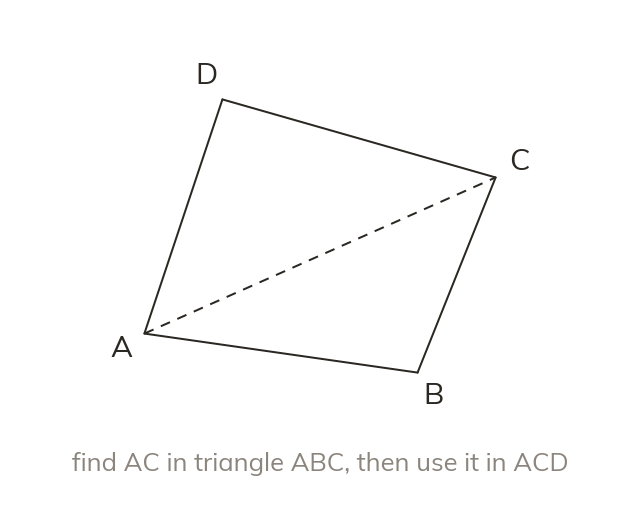
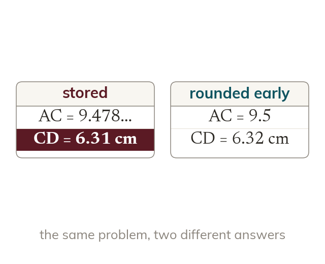
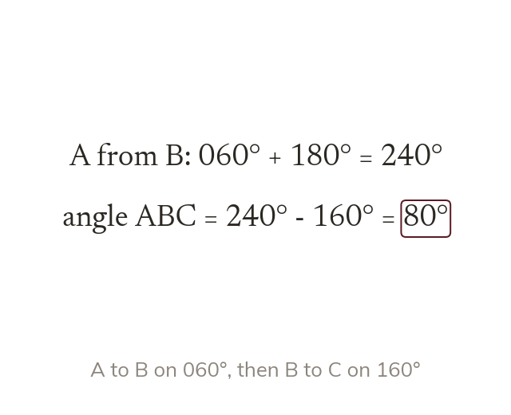
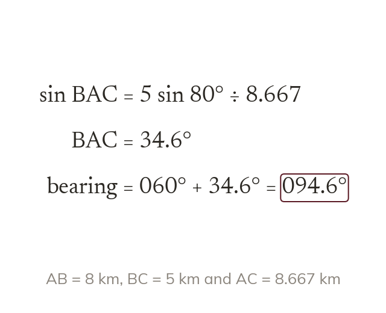

One triangle feeds the next
Split the shape into triangles. A length found in one becomes given information in the next.
Real problems, such as a ship's course or a plot of land, rarely give one ready-made triangle. Today we split shapes into triangles and chain the sine rule, cosine rule and area formula together.
Work down the page at your own pace. Write every answer in your book first, then click to check it.
Read each card, then follow the worked examples one step at a time.

Split the shape into triangles. A length found in one becomes given information in the next.

Store each length in the calculator and round only at the end. Rounding early changes the final answer.
Pick an answer. If it's wrong, the feedback tells you which mistake it was.
Read each card, then follow the worked examples one step at a time.

A journey of two legs makes a triangle. The angle at the turn comes from the back bearing.

An angle inside the triangle turns back into a bearing. Add it to the bearing it was measured from.
Pick an answer. If it's wrong, the feedback tells you which mistake it was.
Finished? Next lesson: 11H.3.1 Solving Linear Pairs by Substitution.
Log in, then search for a code to practise that skill.
Videos, worksheets and more on each part of this lesson.